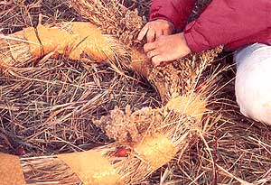

The wreath is a symbol of the cycle of life. Since we take from nature to make these ornaments, it only makes sense to recycle them and thus give something back. In our family, we use each wreath twice, and then we convert it into a bird feeder. As a bonus, this do-it-yourself project gets us outdoors to enjoy the changing seasons.
We begin with a drive down a country road in the fall. This trip has become a tradition in our family, with my boys wondering aloud just what our harvest wreath will look like this year. We take along garden shears, some twine and ribbon, and search for a roadside overgrown with tall grasses-knee-high or higher. (Of course, we make sure we forage on public rights-of-way so we aren't trespassing.
The first thing we do is make a straw ring. We clip the grasses and lay handful after handful on the ground, overlapping each until we've made a column of clippings about four feet long (the longer the columns, the bigger the wreath and three to four inches thick when compressed. Next, the twine gets wrapped tightly around and around the column. We bend the column into a ring, overlap the ends and continue wrapping twine around the joining ends. This grass ring will last for months, is weatherproof and can be dressed for any occasion.
We wrap our harvest wreath with ribbons of gold, brown, russet or other fall colors and then gather weeds, colorful berries, leaves, seed pods and other natural ornaments from road sides, fields or woods. Leaving the stems intact makes it easy to tuck our finds into the straw of the ring. We always count on rose hips for red color and milkweed pods for interesting shapes. Cattails or pheasant feathers adorn some of our wreaths, or we might dangle ears of corn or gourds within the circle. Use your imagination; you won't be disappointed.
Our harvest wreath welcomes guests to our home through the Thanksgiving season. Many comment that they never before noticed the inherent beauty of such common plants as grasses and weeds.
A red ribbon on the wreath announces the advent of the Christmas season. After removing the fall decorations, we tuck evergreen twigs into the ring. Pine, juniper, fir, holly-a variety of greens and leaf shapes adds interest. Sometimes we cover the ring entirely with evergreens; other times we just scatter sprigs around the ring. Our boys usually know of a pine tree that has dropped some cones, or they're willing to climb for them.
In January, it's time to give something back to nature, so we transform the wreath once again, this time into a bird feeder.
The "ribbon" for the feeder-wreath is a popcorn string-another family project. A sunflower head commands the top spot on the wreath. Apple and orange halves are held on the ring by a large nail stuck through the center of each. Sometimes we tie small pieces of suet to the ring, or attach little wire baskets holding suet cakes with seeds. The feeder-wreath provides plenty of sure footing and space for feeding birds.
An estimated $200 million a year is spent on bird seed. However, biologists report that birds are able to survive even harsh winters on their own. Disease from improper feeding may pose more of a threat to the birds than the elements. You must remove the moldy seeds, hulls and bird droppings that can spread disease from most feeders. Our feeder-wreath is self-cleaning because uneaten seeds and hulls drop naturally to the ground.
When the crocuses appear in the spring, our wreath looks haggard. It droops and is frayed-after all, it worked hard all winter. We remove the twine and add the wreath to the compost pile, and thus begin another revolution of the cycle of life.
Charles R. Berry, Jr., learned to make wreaths while working in a florist shop during his undergraduate college years. He now teaches fisheries science at South Dakota State University and lives with his family in Brookings, South Dakota.
|
 Tucking decorations under the ribbon and into the straw of the ring. |
|
|